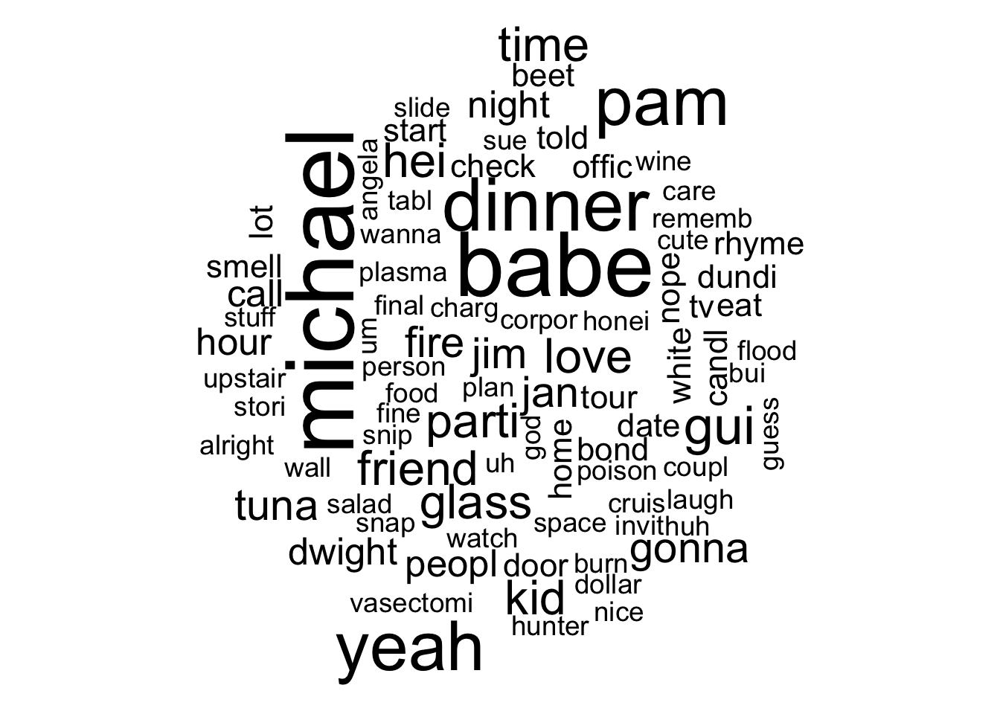
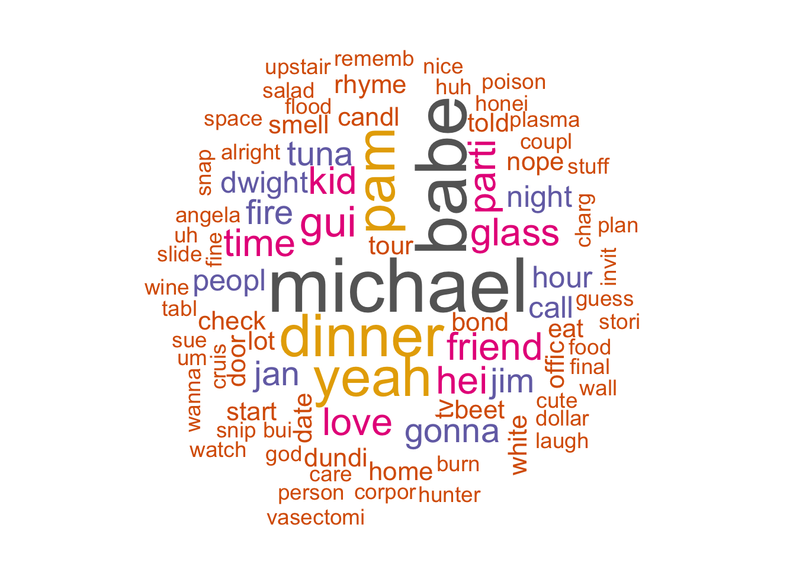
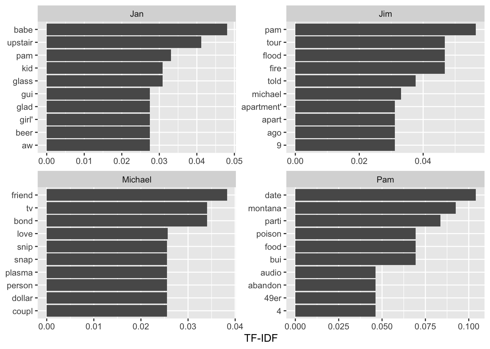
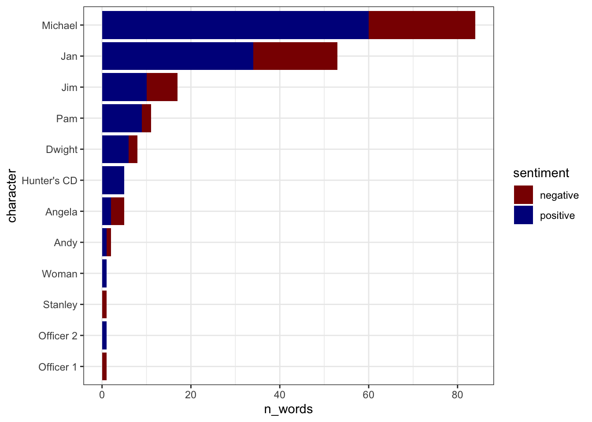
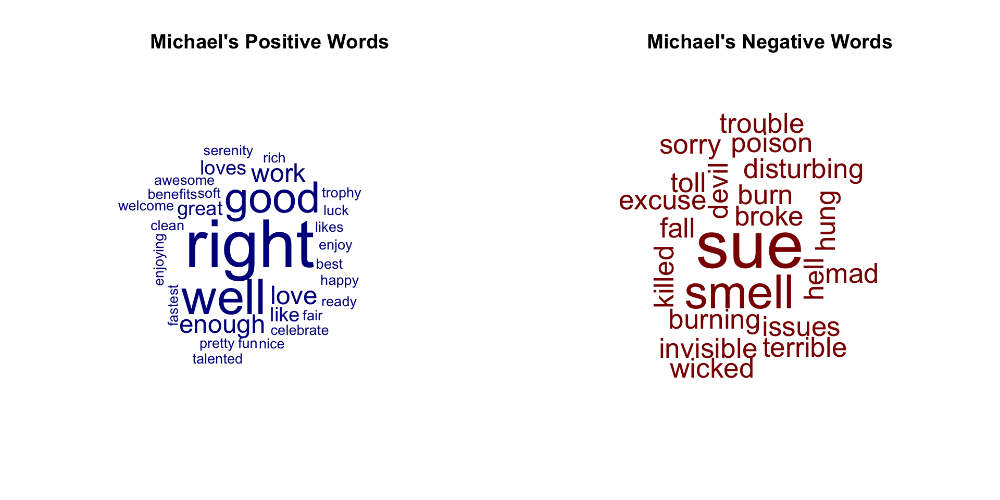
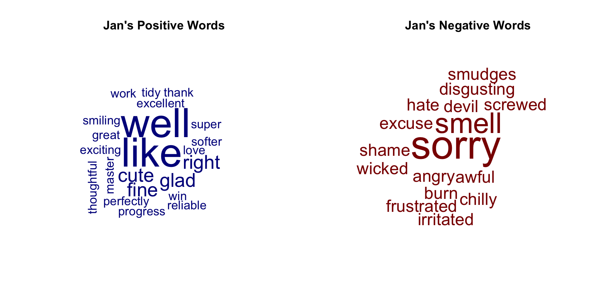

# install.packages("schrute")
library(tidyverse)
library(schrute)
# Create a table from this package just corresponding to the Dinner Party episode:
dinner_party_table <- theoffice |>
dplyr::filter(season == 4) |>
dplyr::filter(episode == 13) |>
# Just select columns of interest:
dplyr::select(index, character, text)Demo 14: Tidy Text Data and Sentiment Analysis
The Office Dinner Party script
In this demo we’ll work with the script from the best episode of ‘The Office’: Season 4, Episode 13 - ‘Dinner Party’. We can access the script using the schrute package (yes this is a real thing):
TidyText processing of script
It’s very common to access data where a single column contains a long string of text, so that you have a long string of text in each row that you have to process. For instance, with the dinner_party_table dataset constructed above, the text column contains long strings which we can see by printing out the first so many rows:
head(dinner_party_table)# A tibble: 6 × 3
index character text
<int> <chr> <chr>
1 16791 Stanley This is ridiculous.
2 16792 Phyllis Do you have any idea what time we'll get out of here?
3 16793 Michael Nobody likes to work late, least of all me. Do you have plans…
4 16794 Jim Nope I don't, remember when you told us not to make plans 'ca…
5 16795 Michael Yes I remember. Mmm, this is B.S. This is B.S. Why are we her…
6 16796 Dwight Thank you Michael. There are many ways to process text, but by far the simplest is to use the tidytext package which has a fantastic free online book demonstrating how to use it. Rather than working with document-term matrices directly like the tm package, instead we’ll consider a long, tidy table with one-token-per-document-per-row. Following the definition in the tidytext book:
A token is a meaningful unit of text, most often a word, that we are interested in using for further analysis, and tokenization is the process of splitting text into tokens.
We can create this tidy dataset from our dinner_party_table using the unnest_tokens() function to break the various lines into tokens (aka tokenization). We specify what the new column will be called, word, given the source of the text, which is text here:
# install.packages("tidytext")
library(tidytext)Warning: package 'tidytext' was built under R version 4.2.3tidy_dinner_party_tokens <- dinner_party_table |>
unnest_tokens(word, text)
# View the first so many rows:
head(tidy_dinner_party_tokens)# A tibble: 6 × 3
index character word
<int> <chr> <chr>
1 16791 Stanley this
2 16791 Stanley is
3 16791 Stanley ridiculous
4 16792 Phyllis do
5 16792 Phyllis you
6 16792 Phyllis have Each row of tidy_dinner_party_tokens corresponds to a single word spoken by a character (see character column) in the show during a single line (as reflected by the index column). We can see that the other columns are still in the data, but the text column has essentially been broken up into many rows. By default, punctuation marks are removed and all of the text is converted to lower case (which was helpful given the many lines in this episode that are in all caps!).
Before we continue to explore this dataset, we will remove stop words and perform stemming. First, we load a table of stop words from the tidytext package and simply filter them out from our data:
# load stop words in the tidytext package
data(stop_words)
# Next we can use the filter function to remove all stop words:
tidy_dinner_party_tokens <- tidy_dinner_party_tokens |>
filter(!(word %in% stop_words$word))
# Alternatively, we can do this with the anti_join function:
# tidy_dinner_party_tokens <- tidy_dinner_party_tokens |>
# anti_join(stop_words)Next, we will use the SnowballC package to perform stemming:
# install.packages("SnowballC")
library(SnowballC)
tidy_dinner_party_tokens <- tidy_dinner_party_tokens |>
# Create a new column stem with the wordStem function:
mutate(stem = wordStem(word))
# View the update:
head(tidy_dinner_party_tokens)# A tibble: 6 × 4
index character word stem
<int> <chr> <chr> <chr>
1 16791 Stanley ridiculous ridicul
2 16792 Phyllis idea idea
3 16792 Phyllis time time
4 16793 Michael likes like
5 16793 Michael late late
6 16793 Michael plans plan Frequency and TF-IDF review
From this dataset, we technically have everything we need to construct the wider document-term (or term-document) matrices. But in the current format, we can take advantage of the tidyverse syntax we’re used to with group_by() and summarize() to compute quantities we’re interested in the ways we want. For instance, we can compute the frequency of each stem across all spoken lines and characters then create a word cloud by just grabbing the appropriate columns.
Word clouds are probably the most well-known way of visualizing text data. Word clouds show the most common words in a set of documents, with more common words being bigger in the word cloud. To make word clouds in R, you’ll need the wordcloud library. When you look at the help documentation for the wordcloud() function, you’ll see that there are two main arguments: words and freq, which correspond to the words in the documents and their frequencies, respectively.
# First create a dataset counting the number of each stem across the full script
token_summary <- tidy_dinner_party_tokens |>
group_by(stem) |>
# Instead of summarize we can use the count function
count() |>
ungroup()
# Now make a wordcloud :
library(wordcloud)Loading required package: RColorBrewerwordcloud(words = token_summary$stem, freq = token_summary$n)
There are a few things we can do to make the word cloud a bit prettier. First, it is more typical to place the biggest words in the center of the word cloud; this can be done by setting random.order = FALSE within wordcloud(). Furthermore, in the above word cloud we see that there are a bunch of tiny terms, and usually these are thrown out; you can control how many words are plotted on your word cloud by controlling max.words within wordcloud(). For example, we set max.words = 100, meaning the resulting word cloud displays the 100 most frequent words. We can also change the color palette; above you can see that loading the wordcloud library automatically loads the RColorBrewer library, and you can use functions like brewer.pal() like I do below to set the colors of the word cloud. There are lots of arguments within the wordcloud() function, so I encourage you to explore this function if you’re interested.
wordcloud(words = token_summary$stem, freq = token_summary$n,
random.order = FALSE, max.words = 100,
colors = brewer.pal(8, "Dark2"))
While could treat each spoken line as a separate document (index), instead we can focus on a collection of documents based on the characters speaking the lines (character). This corresponds to grouping by character instead of index. The following creates the token/stem count summary by character:
character_token_summary <- tidy_dinner_party_tokens |>
group_by(character, stem) |>
# Instead of summarize we can use the count function
count() |>
ungroup()
head(character_token_summary)# A tibble: 6 × 3
character stem n
<chr> <chr> <int>
1 All cheer 1
2 Andy anim 1
3 Andy bet 1
4 Andy capit 1
5 Andy dinner 1
6 Andy flower 2We can easily compute and join the TF-IDF values for each stem treating the different characters as documents with the bind_tf_idf() function. All this requires is three input columns referring to words, documents, and counts. TF-IDF will down-weigh words that occur frequently across all documents and will upweigh words that uniquely occur in certain documents. In our example, these are: stem, character, n:
character_token_summary <- character_token_summary |>
bind_tf_idf(stem, character, n)
head(character_token_summary)# A tibble: 6 × 6
character stem n tf idf tf_idf
<chr> <chr> <int> <dbl> <dbl> <dbl>
1 All cheer 1 1 2.77 2.77
2 Andy anim 1 0.0476 2.77 0.132
3 Andy bet 1 0.0476 2.08 0.0990
4 Andy capit 1 0.0476 2.77 0.132
5 Andy dinner 1 0.0476 0.981 0.0467
6 Andy flower 2 0.0952 2.77 0.264 Note that the tf column here refers to the term-frequency calculated as the number of times the character said that specific word/stem (by that character) divided by the total number of words/stems spoken by that character. The idf column refers to the inverse-document frequency column from lecture.
We can proceed to create a visual displaying the top 10 words/stems in terms of importance by TF-IDF for characters in the episode. For simplicity, we’ll just consider the four characters with the most lines in the episode based on the following:
sort(table(dinner_party_table$character), decreasing = TRUE)
Michael Jan Jim Pam Dwight Angela
89 73 38 28 16 12
Andy Woman Officer 1 Officer 2 All Hunter's CD
10 5 3 2 1 1
Michae Officer Phyllis Stanley
1 1 1 1 The following code chunk now displays the top 10 stems sorted by TF-IDF for Michael, Jan, Jim, and Pam. We use the reorder_within() function from the tidytext package to make sure the bars are sorted within the facets:
character_token_summary |>
# Just grab the four characters of interest:
filter(character %in% c("Michael", "Jan", "Jim", "Pam")) |>
# Group by character and just use the top 10 based on tf_idf with slice_max
group_by(character) |>
slice_max(tf_idf, n = 10, with_ties = FALSE) |>
ungroup() |>
mutate(stem = reorder_within(stem, tf_idf, character)) |>
ggplot(aes(y = tf_idf,
# We use the fct_reorder to sort the bars within the facets
x = stem),
fill = "darkblue", alpha = 0.5) +
geom_col() +
coord_flip() +
scale_x_reordered() +
facet_wrap(~ character, ncol = 2, scales = "free") +
labs(y = "TF-IDF", x = NULL)
Sentiment Analysis
There are also techniques for measuring the overall “sentiment” of a document. These techniques are usually dictionary-based; for example, one can come up with a list of “positive” words and “negative” words (i.e., positive and negative dictionaries), and then count the number of positive and negative words that occur in a document. Thus, you can get an aggregate measure of how “positive” or “negative” a piece of text is. There are many different ways to define the “sentiment” of text (see the References and Resources section below); for this example, we’re just going to focus on “positive” versus “negative” text.
Again we’re going to focus on the episode’s script, and first, we’re going to process the data as we did before in the previous section. However, unlike the previous section, we are not going to remove stop words or perform stemming - for sentiment analysis, it’s important to keep individual words that may have certain types of sentiment.
tidy_all_tokens <- dinner_party_table |>
unnest_tokens(word, text)Now: Which of these words are “positive” words and which of these words are “negative” words? There’s a function in the tidytext library called get_sentiments(). There are many different “sentiment dictionaries” available within this function, and we’re going to just focus on get_sentiments("bing"), which provides a bunch of words that are deemed either “positive” or “negative” in a binary fashion:
get_sentiments("bing")# A tibble: 6,786 × 2
word sentiment
<chr> <chr>
1 2-faces negative
2 abnormal negative
3 abolish negative
4 abominable negative
5 abominably negative
6 abominate negative
7 abomination negative
8 abort negative
9 aborted negative
10 aborts negative
# ℹ 6,776 more rowsIn what follows, we’re going to join the binary sentiment assignment to the tidy token table - and only keep the words with an assignment based on the inner_join() function:
# Label each word with a positive or negative sentiment
# (if it has one)
tidy_sentiment_tokens <- tidy_all_tokens |>
inner_join(get_sentiments("bing"))
# View the head of this:
head(tidy_sentiment_tokens)# A tibble: 6 × 4
index character word sentiment
<int> <chr> <chr> <chr>
1 16791 Stanley ridiculous negative
2 16793 Michael likes positive
3 16793 Michael work positive
4 16795 Michael enough positive
5 16795 Michael enough positive
6 16795 Michael mad negative So now we can see how the characters vary in terms of “positive” or “negative” words. We can simply count up the total number of “positive” and “negative” words said by each character:
character_sentiment_summary <- tidy_sentiment_tokens |>
group_by(character, sentiment) |>
summarize(n_words = n()) |>
ungroup()We can then display how the characters compare with stacked bar charts indicating how many positive and negative words were said by each character (ordering the characters by the total number of assigned words):
character_sentiment_summary |>
group_by(character) |>
mutate(total_assigned_words = sum(n_words)) |>
ungroup() |>
# Reorder the characters by the total number of words:
mutate(character = fct_reorder(character, total_assigned_words)) |>
# Display stacked bars
ggplot(aes(x = character, y = n_words, fill = sentiment)) +
geom_bar(stat = "identity") +
coord_flip() +
scale_fill_manual(values = c("darkred", "darkblue")) +
theme_bw()
From this, we can see the most characters seem to say more positive words than negative words (except for Angela…). But we can see how the proportions within characters appears to vary, e.g., Pam has a much higher proportion of positive words than Jim.
It’s also common to make word clouds of “positive” words and “negative” words, so that one can get an idea of the common words expressing “positive” or “negative” sentiment in a set of documents. Below, we separate words said by the two characters with the most dialogue in the episode, Michael and Jan, then separate out their positive and negative words to create word clouds.
# First for Michael, make the positive summary:
michael_positive_summary <- tidy_sentiment_tokens |>
filter(character == "Michael", sentiment == "positive") |>
group_by(word) |>
count()
# Now Michael's negative summary:
michael_negative_summary <- tidy_sentiment_tokens |>
filter(character == "Michael", sentiment == "negative") |>
group_by(word) |>
count()
# Now make the word clouds for these two tables:
par(mfrow = c(1,2))
# word cloud for Michael's positive words
wordcloud(words = michael_positive_summary$word,
freq = michael_positive_summary$n,
random.order = FALSE, color = "darkblue",
min.freq = 1)
title(main = "Michael's Positive Words")
# word cloud for Michael's negative words
wordcloud(words = michael_negative_summary$word,
freq = michael_negative_summary$n,
random.order = FALSE, color = "darkred",
min.freq = 1)
title(main = "Michael's Negative Words")
# Next for Jan, make the positive summary:
jan_positive_summary <- tidy_sentiment_tokens |>
filter(character == "Jan", sentiment == "positive") |>
group_by(word) |>
count()
# Now Jan's negative summary:
jan_negative_summary <- tidy_sentiment_tokens |>
filter(character == "Jan", sentiment == "negative") |>
group_by(word) |>
count()
# Now make the word clouds for these two tables:
par(mfrow = c(1,2))
# word cloud for Jan's positive words
wordcloud(words = jan_positive_summary$word,
freq = jan_positive_summary$n,
random.order = FALSE, color = "darkblue",
min.freq = 1)
title(main = "Jan's Positive Words")
# word cloud for Jan's negative words
wordcloud(words = jan_negative_summary$word,
freq = jan_negative_summary$n,
random.order = FALSE, color = "darkred",
min.freq = 1)
title(main = "Jan's Negative Words")